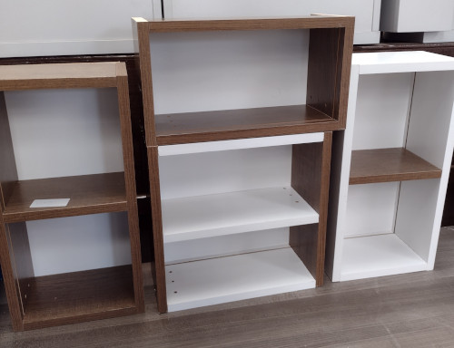

Atividades
Os alunos do curso de marcenaria iniciam suas atividades nos primeiros módulos primeiramente aprendendo sobre o 5s e conhecendo as ferramentas manuais que todo o profissional da área usa no cotidiano.
1º Módulo e 2º Módulo
No primeiro módulo é proposto uma atividade em técnica em madeira,onde os alunos recebem uma tábua pequena de madeira e as medidas dos desenhos, e utilizam a plaina manual para deixar a madeira limpa de impurezas, e com o formão começam a escupir a madeira e fazer os desenhos nela e acabam lixando no final do projeto para dar melhor acabamento.
Já no segundo módulo os alunos começam a desenvolver outro projeto,de tábua de carne e tábua de churrasco,onde eles começam a aprender a mexer na serra tico-tico para corte da mesma porporção comparado a tábua, e usam agora a lixadeira orbital elétrica para destacar a tábua e dar melhor aparência, e a topia para arredondar os cantos.com isso o aluno adquiri mais conhecimento das ferramentas de trabalho.
3º Módulo e 4º Módulo
No módulo 3º e 4º são conteúdos e atividades mais avançadas, onde os educandos iniciam com o projeto no papel, desenhado e com as medidas, depois vai para a prática.A primeira atividade do 3º módulo é a construção de um nicho pequeno,onde o aluno usam as principais ferramentas da marcenaria como a parafusadeira e trena para as medidas,entre outras ferramentas. 
No módulo anterior, com o projeto dos nichos, os alunos tiveram a base de como montar um armárío, já no ultímo módulo a atividade proposta seria montar armários,com gavetas,dobradiças,portas,puxador e fundo.